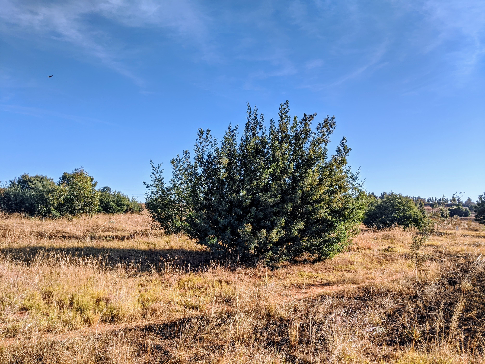
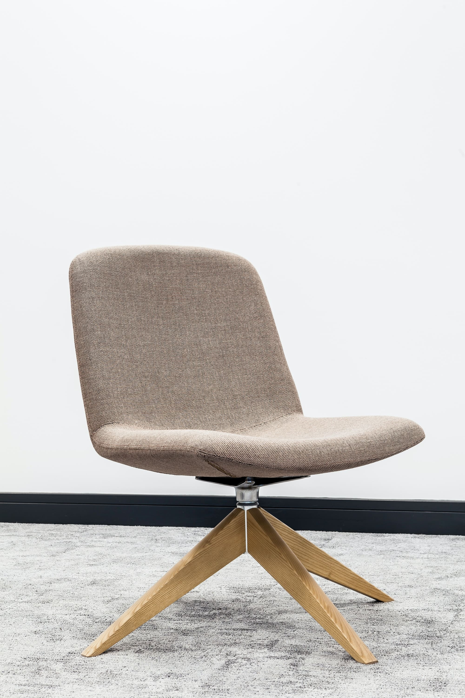
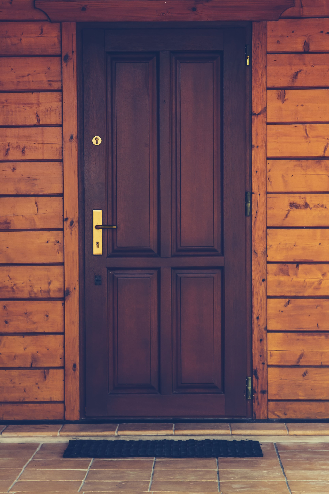
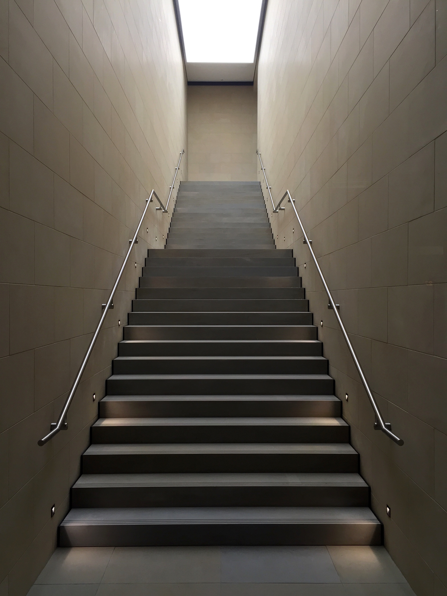
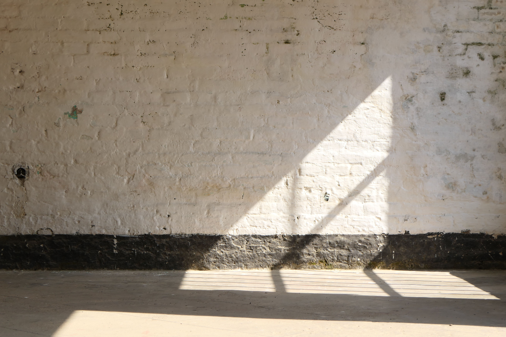
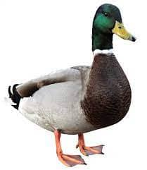
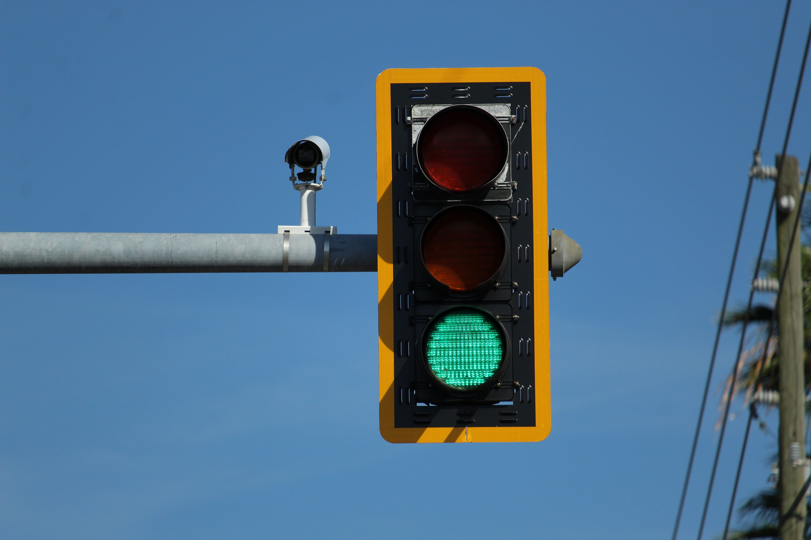
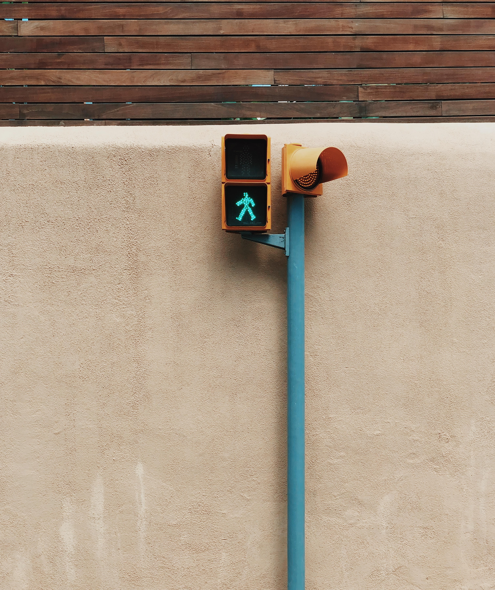

There were three types of sounds used. Use these links to jump to their respective tables:
| Handcrafted/Recorded Sounds | ||
|---|---|---|
| Object/Scene Name | Audio Source | Audio |
| Non-Sonic Objects | ||
| Bench | From [1] | |
| Building | From [1] | |
| Bush | From [1] | |
| Chair | From [1] | |
| Bicycle | From [1] | |
| Door | From [1] | |
| Fence | From [1] | |
| Stop Sign | From [1] | |
| Stairs | From [1] | |
| Wall | From [1] | |
| Sonic Objects | ||
| Bells | Audio Recording From Freesound | |
| Birds | Audio Recording From Freesound | |
| Bus | From [1] | |
| Car | From [1] | |
| Dog | From [1] | |
| Ducks | Audio Recording From Freesound | |
| Traffic Light | From [1] | |
| Motorbike | From [1] | |
| People | From [1] | |
| Railway | From [1] | |
| Train | From [1] | |
| Truck | From [1] | |
| Scenes | ||
| Beach | Audio Recording From Freesound | |
| Canteen | Audio Recording From Freesound | |
| Kids Playing | Audio Recording From Freesound | |
| Mall | Audio Recording From Freesound | |
| Park | Audio Recording From Freesound | |
| Street | Audio Recording From Freesound | |
| [1] Angela Constantinescu, Karin Müller, Monica Haurilet, Vanessa Petrausch, and Rainer Stiefelhagen. 2020. Bring the Environment to Life: A Sonification Module for People with Visual Impairments to Improve Situation Awareness. In Proceedings of the 2020 International Conference on Multimodal Interaction (ICMI '20). Association for Computing Machinery, New York, NY, USA, 50–59. https://doi.org/10.1145/3382507.3418874 | ||
| AudioLDM Sounds | |||
|---|---|---|---|
| Object/Scene Name | Final Text Prompt | Audio | Examples of Other Prompts that resulted in Unsatisfactory Sounds |
| Non-Sonic Objects | |||
| Bench | A person sitting on a wooden bench in a park | Wooden bench, Sitting on a bench |
|
| Building | Doorbell trills followed knocking on a door | Doorbell, Entering a building |
|
| Bush | Rustling a leafy bush slow | Bush in a park, Rustling leaves |
|
| Chair | Chair creaks as people sit on it | Sitting on a chair, Wooden chair |
|
| Bicycle | Ringing the cyclebell sped up | Cycle bell, Ringing a cycle bell |
|
| Door | A wooden door creaking slowly | Opening a door, Wooden door |
|
| Fence | An electric fence humming loudly | Electric fence, Crackling fence |
|
| Stop Sign | Race car braking hard | Braking car, Car slowing to a stop |
|
| Stairs | A person walking up stairs | Walking up stairs, Stairs in a building |
|
| Wall | Building a solid brick wall | Building a wall, Brick wall |
|
| Sonic Objects | |||
| Bells | Bells ringing | Church bells | |
| Birds | Birds chirping | - | |
| Bus | Bus moving on the road | Bus engine, Diesel bus |
|
| Car | A racing car moving on the street | Car driven on a road, Car engine |
|
| Dog | A dog barking | - | |
| Ducks | Ducks quacking in a pond | Ducks quacking | |
| Traffic Light | Traffic lights for pedestrians | Pedestrian crossing, Traffic lights |
|
| Motorbike | Sound of a motorbike engine | Motorbike engine | |
| People | Two people speaking | People talking, People chatting |
|
| Railway | Sound of railway tracks | Railway Siren, Railway Station Announcement |
|
| Train | Sound of a train engine | - | |
| Truck | Sound of a truck engine | - | |
| Scenes | |||
| Beach | Beach with high waves crashing into the shore | Waves breaking into shore, Beach waves |
|
| Canteen | A canteen with people talking and cutlery noises | Canteen noises, People eating at a food centre |
|
| Kids Playing | Kids talking and playing in a park | - | |
| Mall | People talking in a crowded space | Crowded mall, People in a mall |
|
| Park | Natural park | - | |
| Street | A busy street in New York City followed by people and cars | Busy street with cars and people | |
| Im2Wav Sounds | |||
|---|---|---|---|
| Object/Scene Name | Text Prompt | Audio | Examples of Other Prompts that resulted in Unsatisfactory Sounds |
| Non-Sonic Objects | |||
| Bench | |||
| Building |
|
||
| Bush |  |
|
|
| Chair |  |
|
|
| Bicycle |
|
||
| Door |  |
|
|
| Fence | |||
| Stop Sign |
|
||
| Stairs |  | ||
| Wall |  |
|
|
| Sonic Objects | |||
| Bells | |||
| Birds |
|
||
| Bus |
|
||
| Car |
|
||
| Dog |
|
||
| Ducks |  | ||
| Traffic Light |  |  | |
| Motorbike |
|
|
|
| People | |||
| Railway | |||
| Train | |||
| Truck | |||
| Scenes | |||
| Beach |
|
||
| Canteen |
|
||
| Kids Playing | |||
| Mall |
|
|
|
| Park |
|
||
| Street | |||